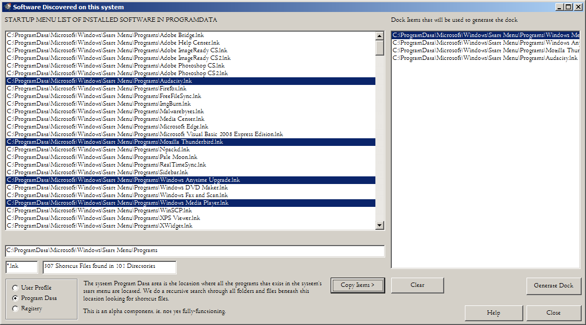

When the 'generate' button on the Icon Settings screen is pressed the Dock Generation Utility will pop up.
It is simple in operation. On the left is a list of the software that
you have installed on your system. Any items that you want to appear in
your dock, click on them. When you have selected those you want, press
the "Copy Items" button. Each of your choices will be placed upon the
list on the right hand side.
When you are content with your selection then press "Generate Dock".
The other buttons are self-explanatory, the clear button clears your
dock items list if you are unhappy with your choice.
Pressing "Copy Items" will re-populate it.
On the far left there are three radio buttons, each selects a different
source for a list of programs that you have installed on your system.
The "user profile" and the "program data" buttons provide access to the
applications that have been added to the Windows start menu. The first
is for apps that are only available to this particular user. The second
is for all apps installed on the system. The third option extracts
program information from the registry. Note that it is surprising how
little information regarding installed applications, is maintained by
Windows, very little information is stored in any one location. As
a result, this program will only find apps that have been
installed, those that have added a shortcut entry to the start menu or
have an entry in the uninstall section of the registry. If an app has
just been copied or extracted to the system's hard drive then we will
not be able to find that app. I could add extra functionality to
trawl the hard drive for identified applications but that would be
a product in itself. For the moment the program data section of the
start menu is currently the best source of data for installed apps.
There is a Help button and Close button. The help shows you this document.
When you press "Generate Dock" a dialog will pop up to ask you how you want to populate your dock.

By default the dock will insert your chosen entries at the current
point in the dock. The other choices append or prepend the new entries
to the existing dock. The Overwrite option is a dangerous one as you
will lose the current dock if you choose it. The choice is yours.